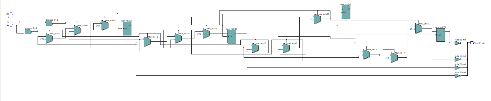
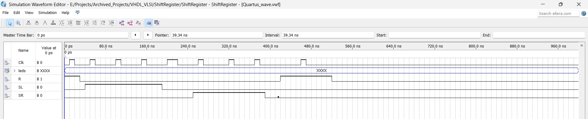
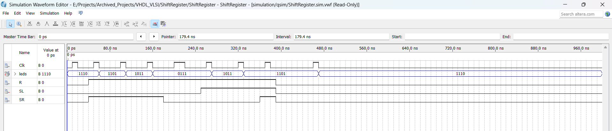

üêæ
Youkii
Home
Contact
üåì
üåì
Home
Contact
FPGA Shift Register
Personal
Hardware
About
Shift Register that Shift Right, Shift Left, Resetting to original value using FPGA kit and
Quatrus
for simulation
A quick project made in a couple of hours for
Computer Architecture
Course in my Computer Engineer Bachelor
first wrote the truth table for the project, then converted it to VHDL code, simulated on Quartus and finally programmed the FPGA kit
Learnt
Quartus Software
VHDL syntax
how to program FPGA Kits
Truth Tables
Simulation WaveForm (Active high on input and output)

Simulation WaveForm (Active high on input and output)

FPGA WaveForm (Active low on input and output)

© 2025 Youkii — Built with ☕ and Passion